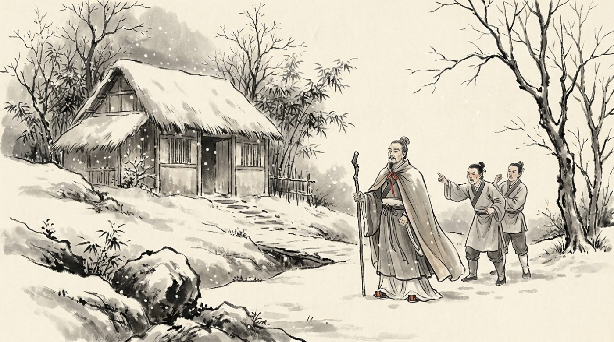

三度、たずねる
「臥龍（ねむっている龍）と呼ばれる若者がいます」—— 劉備は、そう教えられました。
たずねていくと、留守。二度目も留守。 張飛は「そんな若造、しばって連れてくればいい」と怒ります。 それでも劉備は三度目に出かけ、昼寝をしていた相手が起きるまで、 庭で立って待ちました。四十七歳が、二十七歳を待ったのです。
出てきた若者の名は諸葛亮。 彼は劉備に、こう説明しました。
北の曹操は強すぎて、正面からは勝てません。
東の孫権は守りが固く、味方にはできても倒せません。
——ならば西の益州を取って、天下を三つに分けるのです。
これが天下三分の計。 まだ城ひとつ持っていない相手に、二十七歳が地図の上で国のつくり方を示しました。 そしてこの絵は、本当にそのとおりになります。
ちなみに諸葛亮の妻は黄月英といって、 「見た目はよくないが、才能はおまえに釣り合う」と父親が言った女性でした。 諸葛亮は迷わず結婚しています。顔ではなく頭で人を選ぶ人でした。
三顧の礼は記録にも残っている本当の話です。 ただし「二度会えず、三度目にやっと」という細かい場面は小説の脚色。 諸葛亮自身が「三たび私を訪ねてくださった」と書き残しているので、 三度通ったのは事実のようです。

戦わずして、荊州が消える
208年、荊州を長くおさめてきた劉表が病気で死にます。
跡をついだのは次男の劉琮。実の母ではありませんが、 後妻の蔡氏が実家の力を使って押しこんだ子です。 そして劉琮は、曹操の大軍が近づいてくると聞いたとたん、 戦わずに降伏しました。
劉備は、そのことを誰からも知らされていませんでした。 気づいたときには、荊州はもう曹操のものになっている。 逃げるしかありません。
ここで劉備は、おかしなことをします。 自分について行きたいという住民を、断らなかったのです。 十万人。荷物を持ち、老人も子どももいる。 一日に十キロも進めません。追いつかれるのは目に見えていました。
「民を捨てて先を急ぎましょう」と勧められて、劉備は答えます。 「大事を成すには人が根本だ。ついてきてくれる人を、どうして捨てられる」。
ただ一騎、引き返す
長坂という場所で、曹操の騎馬隊が追いつきました。 夜通しの乱戦になり、劉備の妻子は人の波の中ではぐれます。
そのとき趙雲は、 ひとりで敵陣のほうへ馬を返しました。 「趙雲が裏切って曹操に降った」と告げる者に、劉備は言います。 「あれは、そんな男ではない」。
趙雲は乱戦の中で糜夫人を見つけました。 足を負傷して歩けない。「馬にお乗りください」と言うと、 彼女は赤ん坊だけを渡し、井戸に身を投げます。 二人乗りでは逃げきれないと分かっていたからです。
趙雲は井戸を土べいでふさぎ、赤ん坊をふところに入れて、 敵の中を斬りぬけて戻ってきました。 この赤ん坊が、のちの二代目皇帝劉禅です。
橋のたもとでは、張飛がたった一騎で立っていました。 追ってきた曹操軍に向かって、雷のような声でどなります。 「われこそは張飛だ。命がいらない者からかかってこい」。 誰も前に出られませんでした。
長坂の戦い（208年）。負け戦の中の二つの見せ場です。
趙雲は赤ん坊を抱えて敵陣を往復し、張飛は橋の上でひとり大軍を止めました。
赤壁の戦い（208年冬）。二十万をこえる曹操軍を、
五万たらずの孫権・劉備の連合が火で焼いた戦い。
これで天下統一が止まり、三国に分かれる流れが決まります。
組むか、降参するか
劉備の使者として諸葛亮が 江東へわたりました。 迎えたのは、前から「曹操とは組めない、劉備と組むしかない」と考えていた 魯粛です。
呉の家来のほとんどは降伏に傾いていました。相手は二十万をこえる大軍です。 孫権は迷い続けます。
決め手になったのは、呼び戻された周瑜の一言でした。 「曹操の兵は北の人間で、船に慣れていません。長旅で疲れ、病気も出ています。 数だけの軍です」。
孫権は机の角を剣で斬り落として宣言しました。 「これ以上、降伏と言う者はこの机と同じにする」。
火が、川を渡る
曹操軍は船に慣れず、兵が船酔いで倒れていました。 そこで船どうしを鎖でつなぎ、板をわたして、揺れないようにします。 これを勧めたのは龐統だ、と小説は書いています。
つながれた船は、火に弱い。
呉の老将黄蓋は、 自分から百叩きの刑を願い出て、背中を裂かれました。 「周瑜にひどい目にあわされた」と見せかけて、曹操に降伏の手紙を送るためです。 曹操は信じました。
その夜、黄蓋の船団が近づいてきます。積んでいたのは兵ではなく、 枯れ草と油でした。火をつけて突っこむと、鎖でつながれた曹操の船は、 逃げることもできずに端から燃えていきます。 川に落ちた黄蓋を引き上げたのは韓当でした。
曹操は命からがら逃げ帰りました。天下統一は、ここで止まります。
諸葛亮が祭壇をつくって東南の風を呼んだ、という場面は小説の作り話です。 実際は、この季節にときどき東南の風が吹くことを、地元の周瑜たちが知っていた、 というのが本当のところでしょう。 黄蓋の「わざと打たれる作戦」も、小説の脚色です。
火が消えたあと
赤壁のあと、三者が同時に荊州へ手をのばしました。 周瑜は南郡で曹仁と一年ちかく戦い、ようやく城を取ります。 そのすきに劉備は、荊州の南にあった四つの郡を手に入れました。
このとき長沙で関羽と一騎打ちをしたのが、 六十をこえた老将黄忠です。 黄忠は弓の名手でしたが、相手の馬がつまずいたとき、わざと外して射ました。 前の日に関羽が自分を斬らなかった、そのお返しです。 この二人は、のちに同じ国の五人の名将として並ぶことになります。
劉備は生まれて初めて、自分の土地を持ちました。四十八歳のことです。 妻の甘夫人は、その少しあとに亡くなっています。 流浪の日々を、いちばん長くとなりで過ごした人でした。
小説では、諸葛亮が周瑜を怒らせるために 「曹操はあなたの妻の小喬を手に入れたがっている」 とうその詩を読み上げ、それで開戦が決まったことになっています。 もちろん作り話です。周瑜はもともと戦う気でした。
208年 動く戦場図で見る ▶
- 劉備が三度たずねて諸葛亮を得る。「天下を三つに分ける」という設計図がここで生まれた。
- 荊州は戦わずに曹操の手に落ち、劉備は十万人の民を連れて逃げる。長坂で趙雲と張飛が見せ場をつくった。
- 孫権と劉備が手を組み、赤壁で曹操の大軍を火で破る。天下統一が止まり、三国のかたちが決まった。